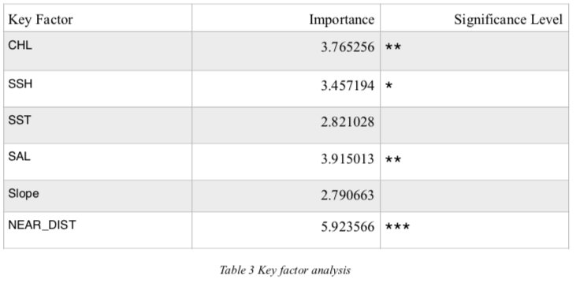

Introduction
With sighting data and tracking data in 2016 and 2017, we want to explore how Chlorophyll, Salinity, Sea Surface Height, Sea Surface Temperature, Distance from shore and Slope will influence common dolphin Delphinus delphis’ appearance in Aegean Sea area. On the base of key factor analysis, we want to use machine learning models to predict the common dolphins appearance based on known environmental factors’ values. We also provided with alternatives for future researchers in order to reach higher accuracy of predicting common dolphins’ active area.
Dataset Overview
Our dataset composes of two parts, common dolphins appearance points and common dolphin absent points with corresponding environmental variables values. The sample size is 82.
There are 43 common dolphins sighting spots from Archipelagoes, Institute of Marine Conservation from April 2016 to May 2017. With transaction data, we have around 76000 GPS points along our regular boat survey routes, we randomly sampled 1 point as absent points on that day’s transect if there is one dolphin appearance point.

Data Pre-processing
1. Data Collection and geographical data pre-processing
The environmental variables SST, SSH, SAL, CHL are collected from marine.coprenicus.eu. And SLO data are processed based on bathymetry data (downloaded from General Bathymetric Chart of the Ocean), while DIS data are calculated in ArcGIS 10.4 by Near tool.
Some variables, like SST(Sea Surface Temperature), SSH(Sea Surface Height), SAL(Salinity) have missing data on our desired location and thus require us to use interpolation. The interpolation method we used is Inverse Distance Weighted(IDW). Compare to nearest neighbor, which assign unknown points value to the nearest known point value directly, IDW gives the weight of each known points contribution to the unknown points as an inverse proportion to their distance. After interpolation, we then used extract and merge tool to produce shapefiles with all 6 variables data.
2. Data Set Validation
In our model, we have 1 factor data, which is P_A, dolphins’ appearance. And all other variables are continuous data. However, we have a very unbalanced dataset because we have 43 positive data with possible 76000 negative data. We must manually adjust the proportion of negative and positive data because dolphin observation is a very random activity, observations of dolphins may differ depends on boat survey time and weather condition. From statistical accuracy consideration, 1:1 ratio between negative and positive data will produce more satisfying results.
To get a better idea of the dolphins' distribution, please also refer to below GIS graph I made for visualization as well:
3. Boat Route Validation
In order to go further to predict dolphin appearance probability with selected variables, we need to verify the eligibility of our boat survey transect from 2016 and 2017. Due to our limitation of our time, funding and professional facilities and with take concerns of safety issues, we usually travel two main routes, one is horizontal around samos island and other one is vertical route where we head into Lipsi island. (Please reference to the black line in Figure 2)
In order to test the two main routes feasibility, we made yearly average maps of each variables and compare average maps in order to test whether our limited boat survey routes cover variables’ ranges in our research area.
As we can see from Figure2(a), our route has covered most data ranges of Chlorophyll data around samos island, we cannot travel to the right side of samos island because it’s near Turkey’s control. The same situation happens in terms of Sea Surface Height and Sea Surface Temperature, although our boat overlooked areas with temperatures from -0.44 to -0.417, we covered most of the data and were not able to travel into Turkey’s territory. While, from Figure2(b), we can see most of the spots cover salinity from 29.14—39.25 and areas with 38.99- 39.13 are ignored.
Overall, chlorophyll, Sea Surface Temperature, Sea Surface Height and Slope values are acceptable. Although Salinity and Distance variables’ ranges are close to the average maps, future study should collect more data to better cover those circumstance in our research area. All in all, the boat survey transect is qualified and we can use those data as negative dataset resources.
Results
In this project, we mainly used Logistic Regression and Random Forest. The overall performance is not satisfying because of our limited data and the high randomness of dolphin presence nature. However we still have concluded significant factors that may contribute for future researchers.From Table, we can see that Distance from shore(NEAR_DIST) is the most important indicator of dolphins’ appearance. Part of the reason is that dolphins will seek food near the port because of tourists.
The aim of this project is to predict Common Dolphin Delphinus delphis’ distribution around samos island in order to help our researchers record dolphins’ behaviors, habits and actives more efficiently. In this chapter, I will try to explain the reasons of our model evaluation results and try to present my own thoughts to better predict dolphins and collect data for future research.
This project is formerly conducted by Kasia and Julita where they believed that Chlorophyll, Salinity, Sea Surface Height, Sea Surface Temperature, Distance from shore and Slope will influence dolphins’ habitat. However, the models we built proved there is no significant relationship between them. We do found that NEAR_DIST, SAL and CHL will influence dolphin locations by key factor analysis, however I believe the inner reason is more concerned with nutrients in the sea, while salinity and chlorophyll are indirect cause of dolphins show up probability.
Future researchers should add biomass, material flow, flow rate, eddy variable to dig deeper into the dolphins’ feeding locations, and thus there we have higher probability to see dolphins. Like in this project, we concluded NEAR_DIST is the most significant variables to help us record dolphins’ appearance and one of the reason is that there are food left by tourist near the shore.
We should also add error index into our model in order to better predict dolphins’ distributions. As we discussed before, our future model should look like below:
Error index is extremely important in our model because observing dolphins are random and of high risk of missing dolphins based on the weather, cloud cover and other factors. Thus we can add cloud cover and dolphins’ general moving ranges into the models as possible errors in order to increase model accuracy.
Final suggestion is to design new route according to variables average map per year and try to cover as many variable ranges as we can to test dolphins’ distribution area.
image credit: http://thewestsidestory.net/dolphins-appear-attracted-magnets-finds-study/